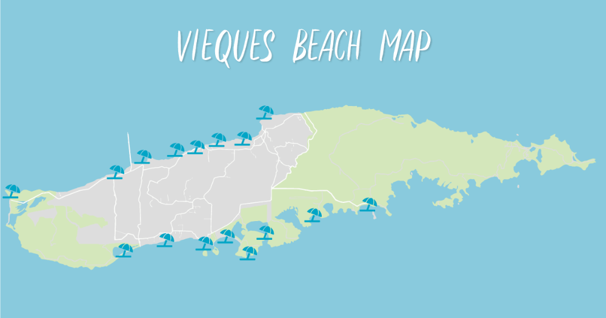

Nuestra Isla
Vieques es un municipio de Puerto Rico localizado al este de la isla principal. Es conocido como La Isla Nena por su belleza natural, sus playas tranquilas y su ambiente caribeño.
Vieques se destaca por sus costas, su historia y sus recursos naturales. Entre sus lugares más conocidos se encuentran la Bahía Bioluminiscente, Playa Caracas, Playa Negra, el Malecón de Esperanza y el Refugio Nacional de Vida Silvestre.
Además de sus paisajes, Vieques conserva una cultura propia. Sus comunidades, su gastronomía, sus caballos y su historia hacen de este pueblo un lugar especial para visitar y conocer.

Lugares destacados
- Bahía Bioluminiscente Mosquito
- Playa Caracas
- Playa Negra
- Malecón de Esperanza
- Fortín Conde de Mirasol
- Refugio Nacional de Vida Silvestre de Vieques